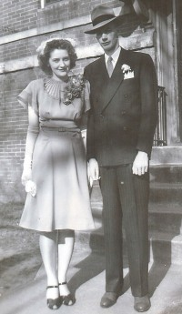

Laila Kolstad
K, #60426, f. 13 juli 1915
Foreldre
Biografi
Laila Kolstad ble født den 13 juli 1915 på/i Bodø, Nordland. Hun giftet seg med
Roald Hansen.
Laila Kolstad was also known as Laila Hansen.
| Sist redigert |
30 desember 2010 00:00:00 |
| Slektskap | 5-menning 1 gang forskjøvet til Håkon Wahl |
Roald Hansen
M, #60427, f. 9 juni 1911, d. 20 desember 1997
Biografi
Roald Hansen ble født den 9 juni 1911 på/i Bodø, Nordland. Han giftet seg med
Laila Kolstad. Han døde den 20 desember 1997 på/i Bodø, Nordland. Han ble gravlagt den 30 desember 1997 på/i Bodø kirkegård, Bodø, Nordland.
| Sist redigert |
19 juni 2017 00:00:00 |
Roald Thorbjørn Kolstad
M, #60428, f. 13 oktober 1916, d. 16 mai 1940
Foreldre
Biografi
Roald Thorbjørn Kolstad ble født den 13 oktober 1916 på/i Bodø, Nordland. Han døde den 16 mai 1940 på/i Hemnes, Nordland.
| Sist redigert |
17 juli 2022 00:04:47 |
| Slektskap | 5-menning 1 gang forskjøvet til Håkon Wahl |
Borghild Brunstad
K, #60429, f. 17 mars 1892, d. 24 januar 1969
Biografi
Borghild Brunstad ble født den 17 mars 1892 på/i Ålesund, Møre og Romsdal. Hun giftet seg med
Birger Ferdinand Eriksen. Hun døde den 24 januar 1969 på/i Bodø, Nordland. Hun ble gravlagt den 30 januar 1969 på/i Bodø kirkegård, Bodø, Nordland.
Borghild Brunstad was also known as Borghild Olsen.
| Sist redigert |
30 desember 2010 00:00:00 |
Egil Brunstad
M, #60430, f. 10 mai 1914, d. 11 september 1975
Foreldre
Biografi
Egil Brunstad ble født den 10 mai 1914. Han døde den 11 september 1975 på/i Bodø, Nordland. Han ble gravlagt den 17 september 1975 på/i Bodø kirkegård, Bodø, Nordland.
| Sist redigert |
30 desember 2010 00:00:00 |
| Slektskap | 5-menning 1 gang forskjøvet til Håkon Wahl |
Jeanne Gundersen
K, #60431, f. 30 oktober 1910
Familie: Erik Olsen (f. 15 juni 1893, d. 21 mars 1940)
| Datter | Ebba Margrethe Olsen |
Biografi
Jeanne Gundersen ble født den 30 oktober 1910 på/i Vadsø, Finnmark. Hun giftet seg med
Erik Olsen.
Jeanne Gundersen was also known as Jeanne Olsen.
| Sist redigert |
30 desember 2010 00:00:00 |
Arne Kolstad
M, #60433, f. 14 juli 1894, d. 30 januar 1957
Foreldre
Biografi
Arne Kolstad ble født den 14 juli 1894 på/i Haversand, Vågan, Nordland. Han giftet seg med
Olaug Christiane Bull Bangsund. Han døde den 30 januar 1957 på/i Ski, Akershus. Han ble gravlagt på/i Ski kirkegård, Ski, Akershus.
| Sist redigert |
30 desember 2010 00:00:00 |
| Slektskap | 4-menning 2 ganger forskjøvet til Håkon Wahl |
Johan Kolstad
M, #60434, f. 22 februar 1896, d. 12 juli 1970
Foreldre
Biografi
Johan Kolstad ble født den 22 februar 1896 på/i Haversand, Vågan, Nordland. Han giftet seg med
Anny Margit Kaspara Evensen den 23 desember 1926 på/i Nidarosdomen, Trondheim, Sør-Trøndelag. Han døde den 12 juli 1970 på/i Asker, Akershus. Han ble gravlagt den 17 juli 1970 på/i Asker kirkegård, Asker, Akershus.
Johan Kolstad var utdannet ved ingeniør. Han bodde på/i Billingstad, Asker, Akershus.
| Sist redigert |
16 mars 2025 18:47:30 |
| Slektskap | 4-menning 2 ganger forskjøvet til Håkon Wahl |
Kolbjørn Kolstad
M, #60435, f. 7 februar 1898, d. 11 juni 1997
Foreldre
Biografi
Kolbjørn Kolstad ble født den 7 februar 1898 på/i Haversand, Vågan, Nordland. Han giftet seg med
Johanne Storli. Han døde den 11 juni 1997 på/i Vågan, Nordland. Han ble gravlagt på/i Svolvær kirkegård, Vågan, Nordland.
| Sist redigert |
7 mars 2025 12:42:50 |
| Slektskap | 4-menning 2 ganger forskjøvet til Håkon Wahl |
Randi Kolstad
K, #60436, f. 28 desember 1899, d. desember 1970
Foreldre
Familie: Jarl Mareno Angell (f. 9 oktober 1891, d. februar 1977)
| Datter | Karin Angell |
| Sønn | Jørgen Angell |
| Sønn | Arne Johan Angell |
Biografi
Randi Kolstad ble født den 28 desember 1899 på/i Haversand, Vågan, Nordland. Hun giftet seg med
Jarl Mareno Angell den 26 desember 1926. Hun døde i desember 1970. Hun ble gravlagt den 29 desember 1970 på/i Vågan kirkegård, Vågan, Nordland.
Randi Kolstad was also known as Randi Angell.
| Sist redigert |
5 januar 2011 00:00:00 |
| Slektskap | 4-menning 2 ganger forskjøvet til Håkon Wahl |
Pauline Kolstad
K, #60437, f. 23 mai 1904, d. 4 desember 1995
Foreldre
Familie: Erling Haugnes (f. 11 mars 1909, d. 30 november 1987)
| Datter | Elisabeth Haugnes |
| Datter | Anna Haugnes |
| Datter | Magnhild Haugnes |
| Sønn | Ola Mathias Haugnes |
Biografi
Pauline Kolstad ble født den 23 mai 1904 på/i Haversand, Vågan, Nordland. Hun giftet seg med
Erling Haugnes. Hun døde den 4 desember 1995 på/i Agdenes, Sør-Trøndelag. Hun ble gravlagt den 12 desember 1995 på/i Ingdal kirkegård, Agdenes, Sør-Trøndelag.
Pauline Kolstad was also known as Pauline Haugnes. Hun ble født den 23 mai 1906.
| Sist redigert |
5 januar 2011 00:00:00 |
| Slektskap | 4-menning 2 ganger forskjøvet til Håkon Wahl |
Magnus Kolstad
M, #60438, f. 13 juni 1907, d. august 1991
Foreldre
Biografi
Magnus Kolstad ble født den 13 juni 1907 på/i Haversand, Vågan, Nordland. Han giftet seg med
Kristine Alapnes den 16 februar 1941. Han døde i august 1991 på/i Molde, Møre og Romsdal. Han ble gravlagt på/i Røbekk kirkegård, Molde, Møre og Romsdal.
| Sist redigert |
5 januar 2011 00:00:00 |
| Slektskap | 4-menning 2 ganger forskjøvet til Håkon Wahl |
Ebba Kolstad
K, #60439, f. 25 mai 1909, d. 1 februar 2003
Foreldre
Biografi
Ebba Kolstad ble født den 25 mai 1909 på/i Haversand, Vågan, Nordland. Hun giftet seg med
Aslak Johannes Moe den 18 juni 1938. Hun døde den 1 februar 2003 på/i Ørsta, Møre og Romsdal. Hun ble gravlagt den 7 februar 2003 på/i Ørsta kirkegård, Ørsta, Møre og Romsdal.
Ebba Kolstad was also known as Ebba Moe.
| Sist redigert |
5 januar 2011 00:00:00 |
| Slektskap | 4-menning 2 ganger forskjøvet til Håkon Wahl |
Johanne Albertine Kolstad
K, #60440, f. 24 desember 1911
Foreldre
Biografi
Johanne Albertine Kolstad ble født den 24 desember 1911 på/i Haversand, Vågan, Nordland. Hun giftet seg med
Kåre Edmund Ytterstad den 26 januar 1946.
Johanne Albertine Kolstad was also known as Johanne Albertine Ytterstad.
| Sist redigert |
5 januar 2011 00:00:00 |
| Slektskap | 4-menning 2 ganger forskjøvet til Håkon Wahl |
Gunnar Kolstad
M, #60441, f. 6 juni 1914, d. 1 september 1996
Foreldre
Biografi
Gunnar Kolstad ble født den 6 juni 1914 på/i Haversand, Vågan, Nordland. Han giftet seg med
Solveig Heggeløkken den 23 mai 1942. Han døde den 1 september 1996 på/i Bærum, Akershus. Han ble gravlagt den 14 oktober 1996 på/i Haslum kirkegård, Bærum, Akershus.
| Sist redigert |
19 juni 2017 00:00:00 |
| Slektskap | 4-menning 2 ganger forskjøvet til Håkon Wahl |
Olaug Christiane Bull Bangsund
K, #60442, f. 4 januar 1895, d. 26 april 1969
Foreldre
Biografi
Olaug Christiane Bull Bangsund ble født den 4 januar 1895 på/i Klinga, Namsos, Nord-Trøndelag. Hun giftet seg med
Arne Kolstad. Hun døde den 26 april 1969 på/i Ski, Akershus. Hun ble gravlagt på/i Ski kirkegård, Ski, Akershus.
Olaug Christiane Bull Bangsund was also known as Olaug Christiane Kolstad.
| Sist redigert |
30 desember 2010 00:00:00 |
| Slektskap | 9-menning 4 ganger forskjøvet til Håkon Wahl |
Nils Antoni Bangsund
M, #60443, f. 28 september 1848
Biografi
Nils Antoni Bangsund ble født den 28 september 1848 på/i Namsos, Nord-Trøndelag. Han giftet seg med
Margrethe Sverdrup.
Nils Antoni Bangsund was also known as Antoni Bangsund.
| Sist redigert |
25 mai 2024 23:44:02 |
Margrethe Sverdrup
K, #60444, f. 10 mai 1857, d. 9 oktober 1897
Foreldre
Biografi
Margrethe Sverdrup ble født den 10 mai 1857 på/i Nærøy, Nord-Trøndelag. Hun giftet seg med
Nils Antoni Bangsund. Hun døde den 9 oktober 1897 på/i Klinga, Namsos, Nord-Trøndelag.
Margrethe Sverdrup was also known as Margrethe Bangsund. Hun was also known as Hartvigine Margrethe Johanne Sverdrup.
| Sist redigert |
25 mai 2024 18:18:56 |
| Slektskap | 8-menning 5 ganger forskjøvet til Håkon Wahl |
Jon Kolstad
M, #60445, f. 18 mars 1922
Foreldre
Biografi
Jon Kolstad ble født den 18 mars 1922 på/i Klinga, Namsos, Nord-Trøndelag.
Jon Kolstad var utdannet ved ingeniør. Han i 1950 drev Ski Elektriske sammen med faren.
| Sist redigert |
18 juli 2022 18:51:08 |
| Slektskap | 5-menning 1 gang forskjøvet til Håkon Wahl |
Anne Margrethe Kolstad
K, #60446, f. 22 desember 1925
Foreldre
Biografi
Anne Margrethe Kolstad ble født den 22 desember 1925 på/i Klinga, Namsos, Nord-Trøndelag.
| Sist redigert |
30 desember 2010 00:00:00 |
| Slektskap | 5-menning 1 gang forskjøvet til Håkon Wahl |
Einar Kolstad
M, #60447, f. 13 desember 1927, d. 17 august 1928
Foreldre
Biografi
Einar Kolstad ble født den 13 desember 1927. Han døde den 17 august 1928.
| Sist redigert |
30 desember 2010 00:00:00 |
| Slektskap | 5-menning 1 gang forskjøvet til Håkon Wahl |
Gladys Irene Kloppen
K, #60449, f. 26 mars 1919
Foreldre
Familie: Palmer Mikkal Wahl (f. 22 februar 1921, d. 23 april 1997)
| Sønn | Michael Palmer Wahl+ |
| Datter | Lauren Kay Wahl |
| Sønn | David Stephen Wahl (f. 2 juli 1952, d. 5 september 2017) |
| Datter | Tracey Jean Wahl |

Palmer M og Gladys Wahl
Biografi
Gladys Irene Kloppen ble født den 26 mars 1919 på/i South Dakota, USA. Hun giftet seg med
Palmer Mikkal Wahl den 1 april 1946 på/i Omaha, Douglas, Nebraska, USA.
Gladys Irene Kloppen was also known as Gladys Irene Wahl.
| Sist redigert |
23 oktober 2011 00:00:00 |
{kind=link}